模組活動一｜2026/11/30（一）第 13 週 14:10–16:10
公開資料、API 與Prompt-driven Notebook
用 Prompt 讓 AI 寫程式、由你看懂與驗證：真實抓取花蓮站空品資料（現況＋歷史）
🔑 API 金鑰＝帳號密碼：只放在 Colab「密鑰」，不要寫進程式碼、不要貼給 AI、截圖前先遮住。
任務目標
今天的身分：花蓮縣環保局「數據科技特派員」
情境任務（申請書・作業設計）：用環境部 Open API 撈出花蓮真實監測數據，讓 AI 科學特助協助你分析
任務目標（今天 2 小時要做到）
- ① 在環境部環境資料開放平臺找到空品資料集與 DataID
- ② 申請自己的 API 金鑰，安全地存進 Colab 密鑰
- ③ 用 Prompt 請 AI 寫出串接 API 的 Python 程式
- ④ 學會把錯誤訊息丟回 AI 除錯（Debug）
- ⑤ 抓到花蓮站現況＋近一個月歷史資料，存成 CSV
- ⑥ 說出 O₃、NO₂、NOx、PM2.5 欄位的化學意義
AI 做什麼／你做什麼（人類主體性）
- AI 協作 寫出抓資料的程式碼、解釋錯誤訊息
- 你負責 找對資料集、保護金鑰、判斷結果對不對
- 你負責 紀錄每一個 Prompt 與修正過程
- 期末產出 「花蓮在地環境數據 AI 協作解讀報告書」的第一份原料：花蓮站 CSV
- 下週 模組二用今天的 CSV 做清洗與畫圖
完整步驟流程圖
1
尋寶
14:32–14:46
- 開環境部資料開放平臺
- 搜尋「空氣品質指標」
- 認識 DataID：aqx_p_432（現況）、aqx_p_488（歷史）
- 拆解 API 網址
2
金鑰
14:46–14:52
- 會員註冊
- 收信取得金鑰
- 金鑰＝密碼，絕不外流
3
Colab
14:52–14:59
- 從懶人包按「Open in Colab」
- 複製到雲端硬碟
- 金鑰存進「密鑰」
4
生成
15:09–15:29
- 好 Prompt 的 6 個零件
- 原版→改良版 Prompt
- 用 Gemini 生成程式碼
- 執行並驗證前 5 筆
5
除錯
15:29–15:42
- 讀紅字錯誤
- 按「說明錯誤」或把錯誤貼給 AI
- AI 的修正也要檢查
6
落地
15:42–15:56
- 篩出花蓮（現況）
- 抓近一個月歷史（aqx_p_488）
- 存 CSV、下載
- 欄位化學意義
上方灰色列會隨捲動標示你現在在哪一步；點任一步可直接跳過去。
上課前先知道
今天怎麼評量？預期成果與評量規準
申請書・學習成果與評量方式（三向度 Rubric 之一）＋預期成果
| 評量項目 | 優秀（8–10 分） | 通過（6–7 分） | 需加強（0–5 分） |
|---|---|---|---|
| API 資料獲取能力 | 能順暢透過 AI 協作呼叫環境部 API，取得花蓮完整、無誤數據並載入 Colab | 能抓到資料，但格式混亂，或需助教大幅協助 | 無法串接 API，也無法讓 AI 生成可執行程式 |
| 今日證據 | ① 全臺測站表 ② 花蓮現況 1 列 ③ 花蓮近 30 天約 700 列 ④ CSV 檔 | Prompt 紀錄（學習單任務三） | 金鑰沒有出現在任何截圖或程式碼 |
| 對應預期成果 | 質化：不再對大數據與程式碼恐懼，建立透過 AI 跨領域解決問題的自信 | 質化：分辨 AI 的「工具價值」與「人類主體性」 | 量化：每組一件結合花蓮 API 的 PBL 數據作品（第一份原料） |
AI 課程倫理規範（進階）①：資料與金鑰的倫理
第 13 週 AI 倫理規範 II：開放資料不等於可以亂用；金鑰等於你的帳號密碼
API 金鑰＝帳號密碼
- 只放在 Colab「密鑰」，不寫進程式碼
- 截圖前先遮住；不要貼給 AI
- 不要上傳 GitHub、雲端分享或群組
- 外流了：立刻到平臺重新申請
- 每支 API 每日 5000 次，大家各用各的
開放資料的授權與引用
- 環境部資料依「政府資料開放授權條款」
- 可以使用、改作，但要註明出處
- 報告寫法：環境部環境資料開放平臺，資料集名稱（DataID），擷取日期
- 原始數值不可竄改；清洗過程要記錄
個資與誠實
- 不要把同學姓名、學號丟給 AI
- AI 生成的程式與文字要標示
- 學習單最後有「AI 使用誠實聲明」
- 用了 AI 不扣分；隱瞞才扣分
AI 課程倫理規範（進階）②：哪些交給 AI？哪些一定要自己做？
申請書・作業設計「AI 應用環節」：AI 協作部分 vs. 學生獨立完成部分
| 交給 AI 協作（必須使用 AI） | 你自己完成（禁止完全依賴 AI） | |
|---|---|---|
| 模組一（今天） | 撰寫 API 串接提示詞，生成抓資料的 Python 程式碼 | 找對資料集與測站；判斷抓到的數字合不合理 |
| 模組二（12/7） | 大型數據集的清理、轉換、統計；繪製圖表 | 校正圖表：單位、標題、異常值 |
| 模組三（12/21） | 初探異常值背後可能的化學反應路徑 | 查證：課本、環境部官方報告；揪出 AI 幻覺 |
| 期末報告 | 協助整理資料、繪圖、排版 | 在地脈絡解讀（地形、季風、產業）與倫理反思日誌 |
1環境部 API 尋寶
步驟 1-1｜打開環境部環境資料開放平臺，搜尋空品資料
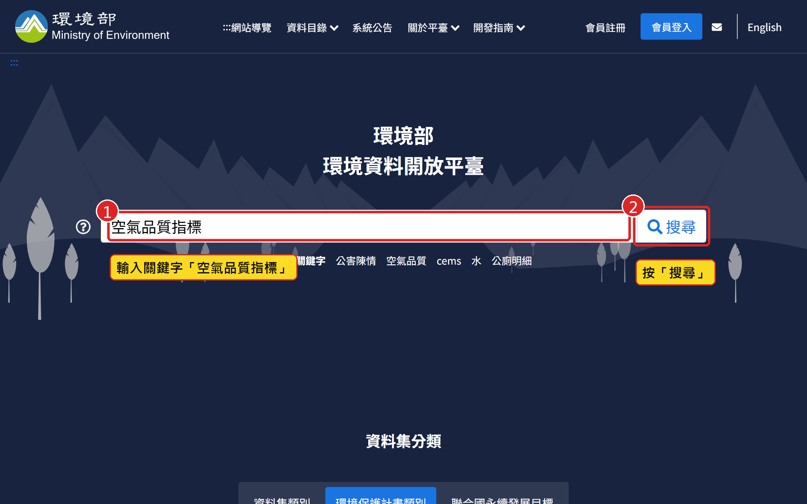
跟著做
- 1瀏覽器輸入 data.moenv.gov.tw
- 2搜尋框輸入「空氣品質指標」
- 3按右邊藍色「搜尋」
- →不用登入也能搜尋與預覽資料
💡 平臺有 800 多個開放資料集：空氣、水質、土壤、廢棄物都有。期末行動選題時可以回來找。
步驟 1-2｜在搜尋結果中找到兩個空品資料集
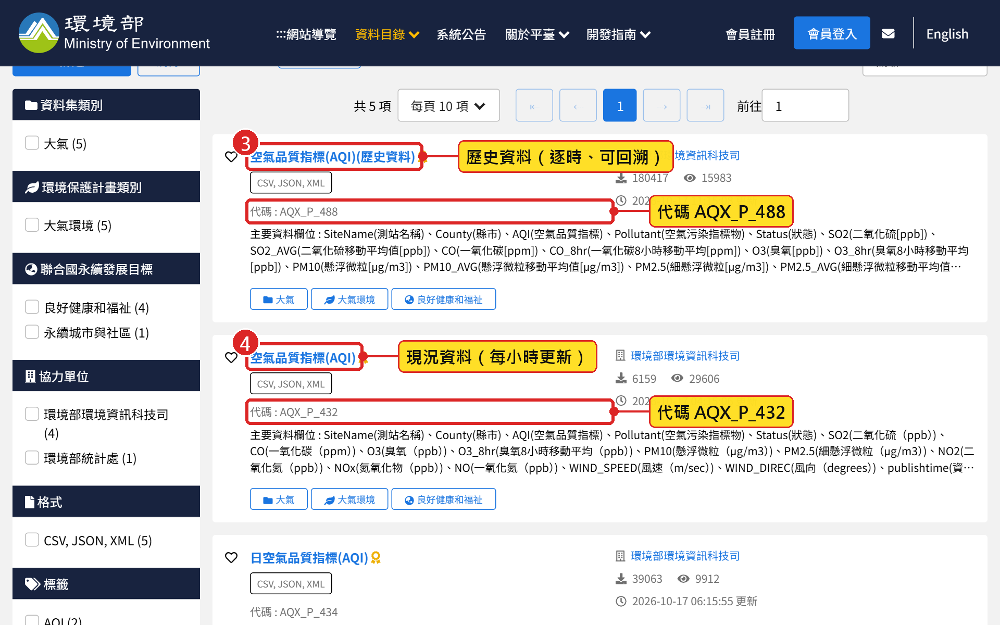
跟著做
- 3「空氣品質指標(AQI)(歷史資料)」：代碼 AQX_P_488，逐時、可回溯
- 4「空氣品質指標(AQI)」：代碼 AQX_P_432，每小時更新的現況
- →記下兩個代碼，等一下寫進網址
💡 「代碼」就是 DataID。寫進 API 網址時要改成小寫：aqx_p_432、aqx_p_488。
步驟 1-3｜讀懂資料集頁：DataID、欄位與更新頻率
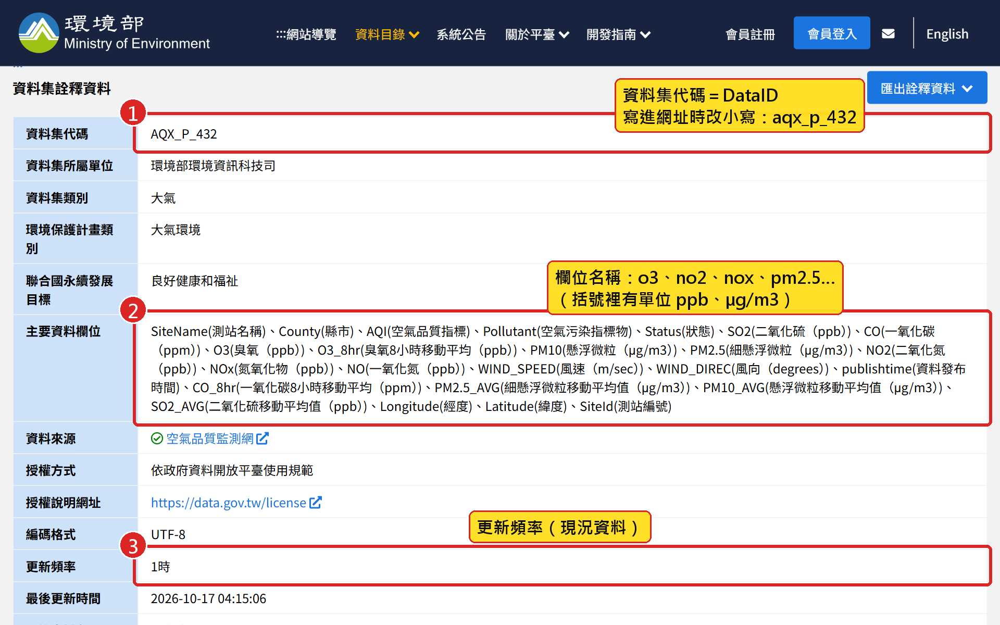
跟著做
- 1資料集代碼 AQX_P_432 → 網址用 aqx_p_432
- 2主要資料欄位：O3、NO2、NOx、PM2.5…括號裡是單位
- 3更新頻率：1 時（每小時一筆最新值）
- →往下捲還有「資料預覽」，可先看長什麼樣
💡 化學小提醒：O₃、NO₂、NOx 單位是 ppb（十億分之一體積比）；PM2.5 是 μg/m³（質量濃度），兩者不能直接比大小。
步驟 1-4｜歷史資料集：aqx_p_488（逐時、可回溯）
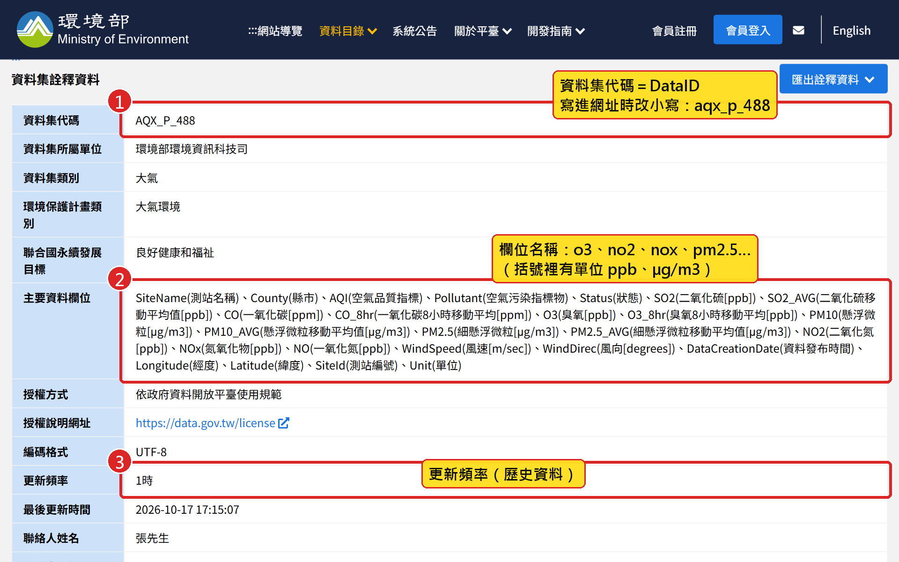
跟著做
- 1代碼 AQX_P_488 → 網址用 aqx_p_488
- 2欄位幾乎相同，時間欄叫 datacreationdate
- →一次最多 1000 筆；只篩花蓮就能抓到約 40 天
💡 現況（432）回答「現在花蓮空氣如何？」；歷史（488）回答「這個月花蓮臭氧幾點最高？」
步驟 1-5｜把 API 網址拆成積木
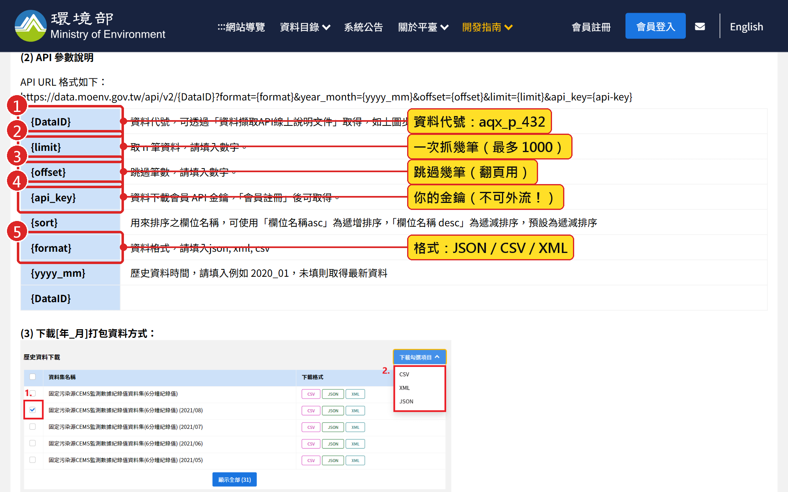
跟著做
- 1DataID：要哪個資料集
- 2limit：一次抓幾筆（≤1000）
- 3offset：跳過幾筆（翻頁）
- 4api_key：你的金鑰
- 5format：JSON／CSV／XML
💡 完整網址：https://data.moenv.gov.tw/api/v2/aqx_p_432?api_key=你的金鑰&limit=1000&format=JSON
還可以加 filters=sitename,EQ,花蓮（只要花蓮）、sort=datacreationdate desc（新到舊）
2取得 API 金鑰
步驟 2-1｜會員註冊：同意 API 介接服務條款
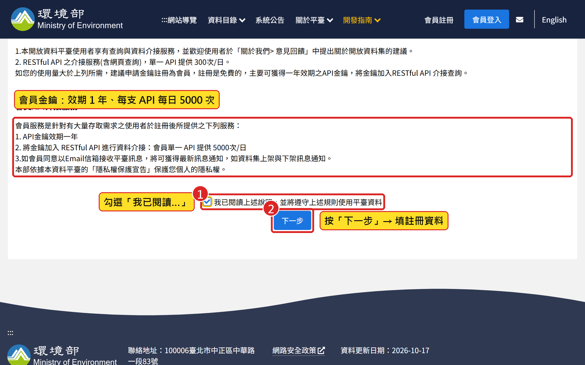
跟著做
- →首頁右上角「會員註冊」
- 1捲到最下面，勾選「我已閱讀上述說明…」
- 2按「下一步」
💡 會員金鑰效期 1 年，每支 API 每天 5000 次；沒有金鑰的網址會回傳「api_key 不存在。」
步驟 2-2｜填註冊表單，金鑰會寄到你的信箱
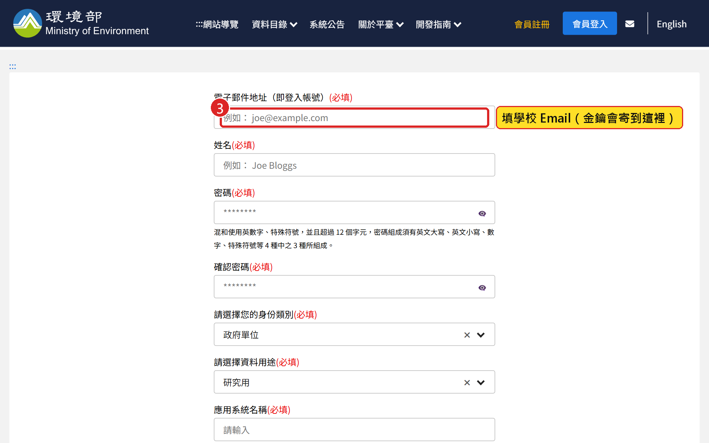
跟著做
- 3電子郵件填學校信箱（金鑰寄到這裡）
- →姓名、密碼、身份類別選「學術機關」、用途選「研究用」
- →應用系統名稱可填「環境化學課程作業」
- →送出後到信箱收信，信裡就是 API 金鑰
💡 收不到信？看垃圾郵件匣。今天真的收不到，先用懶人包的「離線備援資料」繼續做，課後再補。
步驟 2-3｜登入後在「API金鑰設定」也看得到金鑰
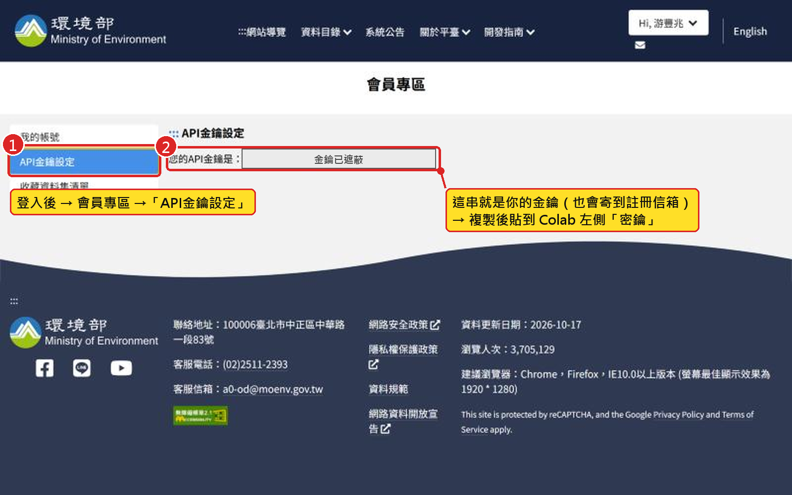
跟著做
- 1登入 → 會員專區 →「API金鑰設定」
- 2這串就是金鑰，複製起來
- →下一步貼到 Colab 的「密鑰」
💡 截圖或分享畫面前，一定先把金鑰遮住（就像這張圖）。
3開啟 Colab 範本
步驟 3-1｜從懶人包網站一鍵開啟 Colab 範本
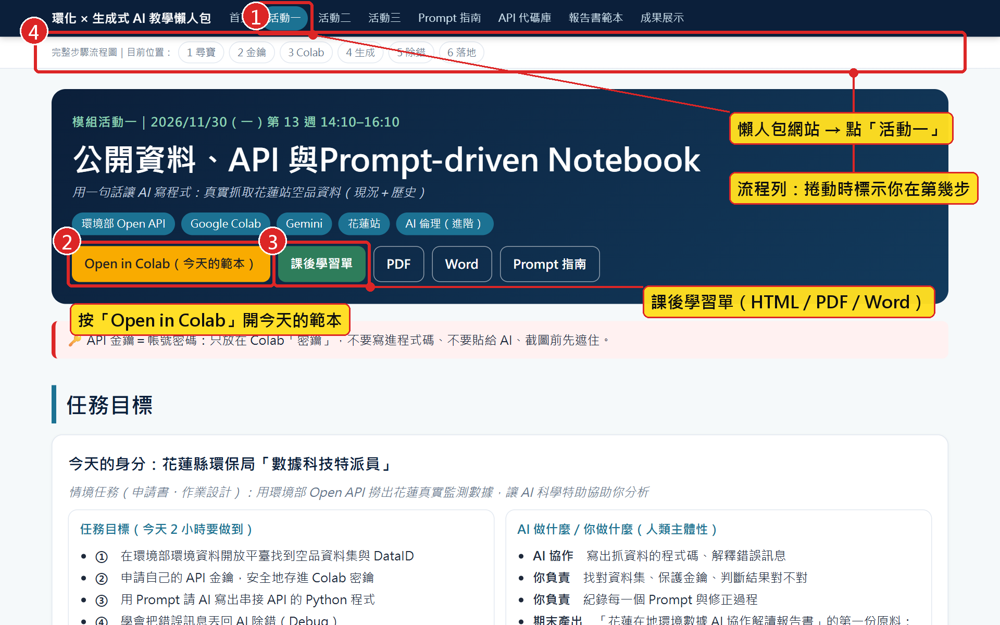
跟著做
- 1掃 QR code 或輸入 rlirdo.github.io/envchem-ai-module-kit
- 2進入「模組活動一」操作手冊
- 3按「Open in Colab」橘色按鈕
- →用自己的 Google 帳號登入 Colab
💡 範本裡每一步都有「提示詞」和收起來的「參考解答」：先寫 Prompt 給 AI，卡關 5 分鐘以上再展開解答。
步驟 3-2｜登入 Google，先「複製到雲端硬碟」
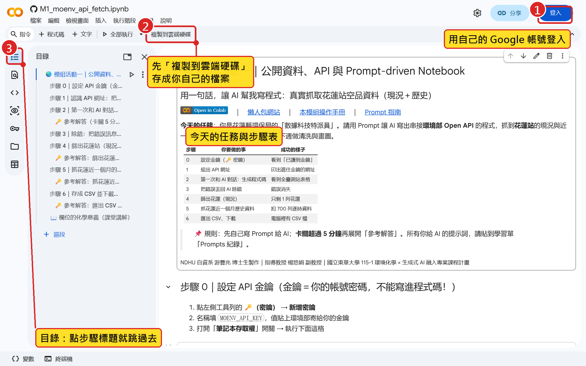
跟著做
- 1右上角「登入」：用自己的 Google 帳號
- 2上方「複製到雲端硬碟」：存成你自己的檔案
- 3左側「目錄」：點步驟標題就跳過去
- →筆記本最上面有今天的任務與步驟表
💡 不複製就直接改，關掉後修改會不見；複製後的檔案在雲端硬碟「Colab Notebooks」資料夾。
步驟 3-3｜把金鑰存進 Colab「密鑰」
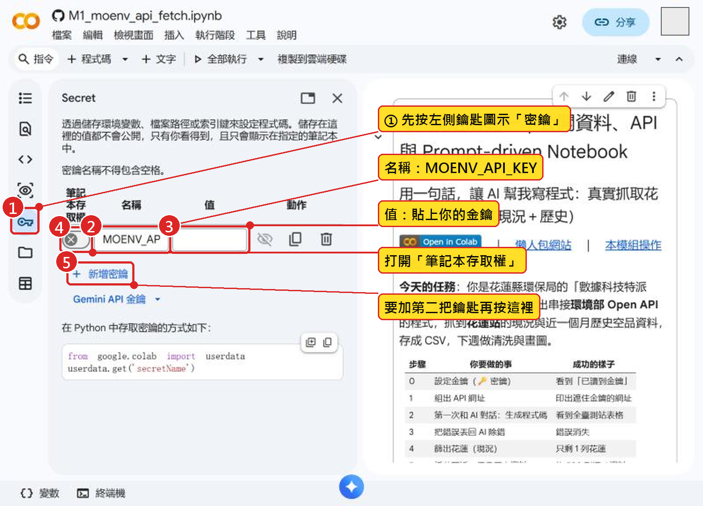
跟著做
- 1左側工具列按鑰匙圖示「密鑰」→ 新增密鑰
- 2名稱：MOENV_API_KEY（全大寫、底線）
- 3值：貼上你的金鑰
- 4打開「筆記本存取權」
- →執行步驟 0：看到「已讀到金鑰」
💡 金鑰放在「密鑰」裡，分享筆記本時不會跟著分享出去；寫在程式碼裡就會。
4第一次對話：AI 生成程式碼
步驟 4-1｜好 Prompt 的 6 個零件
Prompt-driven：不用背語法，但要會描述需求、看懂結果、發現錯誤
6 個零件
- ① 任務 我想回答什麼問題？例：花蓮站近一個月 PM2.5、O3、NO2 的變化
- ② 資料來源＋樣子 API 網址（金鑰用 API_KEY）＋貼 1–2 筆回傳樣本；寫清楚測站與時間範圍
- ③ 欄位（英文名） publishtime、sitename、pm2.5、o3、no2
- ④ 輸出形式 整理成表格（DataFrame）、存成 CSV
- ⑤ 限制與說明 在 Colab 執行、加中文註解；角色（Python 資料科學家）放這裡
- ⑥ 驗證 先印出欄位名稱和前 5 筆讓我確認；說明每段在做什麼
常見地雷
- 寫「監測時間」→ AI 只能猜；請寫英文欄名 publishtime
- 只說「幫我抓資料」→ 沒有任務，AI 不知道要抓哪些
- 把真的金鑰貼給 AI → 存 Colab 密鑰，用 userdata.get 讀
- 一次要求太多事 → 分步驟：今天抓資料，下週畫圖
- 沒有驗證就往下做 → 先看前 5 筆對不對
步驟 4-2｜今天的 Prompt 模板（申請書原版）
你是一個 Python 資料科學家。我有一個環境部空氣品質開放資料的 API 網址：
https://data.moenv.gov.tw/api/v2/aqx_p_432?api_key={API_KEY}&limit=1000&format=JSON
（金鑰已經存在變數 API_KEY 裡）
我不會寫程式，請幫我寫出一段可以在 Google Colab 運行的 Python 程式碼，功能是要抓取這個網址的資料，並將裡面的監測時間、PM2.5、O3 欄位整理成一個乾淨的表格（DataFrame）顯示出來。
請在程式碼裡加上詳細的中文註解。
- 對照零件 有角色、網址、欄位、表格、註解
- 缺什麼 ① 任務、② 資料樣子、⑥ 驗證
- 欄位名 「監測時間」實際叫 publishtime
- 下一頁 補成改良版
步驟 4-3｜改良版 Prompt：補上任務、資料樣子、驗證
【① 任務】我想知道花蓮站現在的空氣品質，並和全臺其他測站比較 PM2.5、O3、NO2。
【② 資料來源＋樣子】環境部 API：https://data.moenv.gov.tw/api/v2/aqx_p_432?api_key={API_KEY}&limit=1000&format=JSON（金鑰已用 userdata.get 存在變數 API_KEY）。回傳是 JSON 清單，每筆像這樣：
{"sitename":"花蓮","county":"花蓮縣","aqi":"27","pm2.5":"4","o3":"30","no2":"1","publishtime":"2026/10/17 17:00:00", …}
【③ 欄位】sitename、county、publishtime、pm2.5、o3、no2（數值是文字）
【④ 輸出】整理成 DataFrame，數值轉成數字
【⑤ 限制】你是 Python 資料科學家；程式要能在 Google Colab 執行，加上詳細中文註解
【⑥ 驗證】先印出欄位名稱和前 5 筆讓我確認，再印出總共幾個測站
- 樣本哪來 範本步驟 1「看資料長什麼樣子」
- 改成你的 任務換成你想問的問題
- 驗證 先看前 5 筆、欄位名對不對
- 記下來 原版和改良版都抄進學習單任務三
步驟 4-4｜在範本「步驟 2」找到 Prompt 與空白格
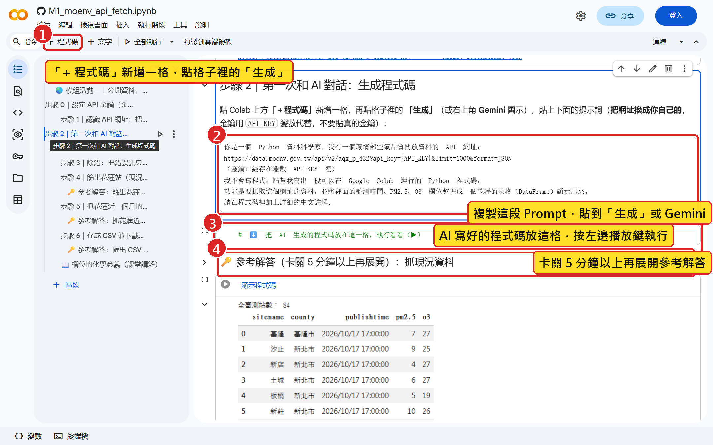
跟著做
- 1工具列「+ 程式碼」可新增一格
- 2複製範本裡的 Prompt（改成你的版本）
- 3AI 寫好的程式碼放進這一格
- 4卡關 5 分鐘以上才展開參考解答
💡 範本「步驟 2」已經留好空白格；你也可以在任何位置用「+ 程式碼」新增。
步驟 4-5｜第一次用 Colab AI：會跳出隱私權聲明
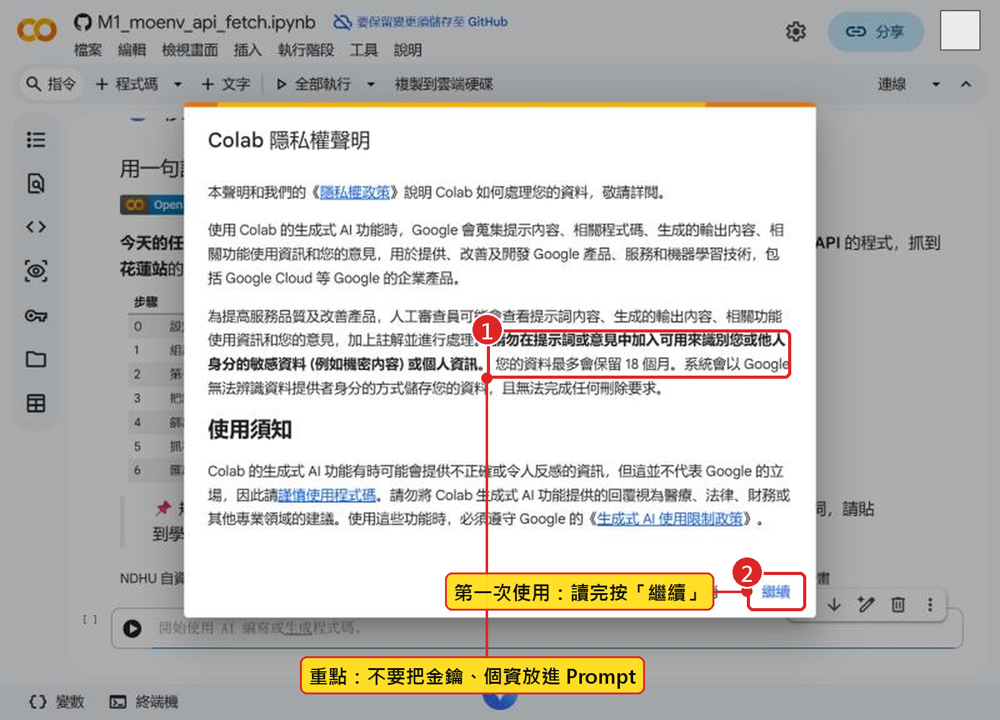
跟著做
- 1讀重點：Prompt 內容可能被人工審查
- →所以絕不放金鑰、姓名學號等個資
- 2讀完按「繼續」才能使用 AI
💡 這就是 AI 倫理的實際場景：你送出的每一個字都可能被保存 18 個月。
步驟 4-6｜在右側 Gemini 面板貼上 Prompt 送出
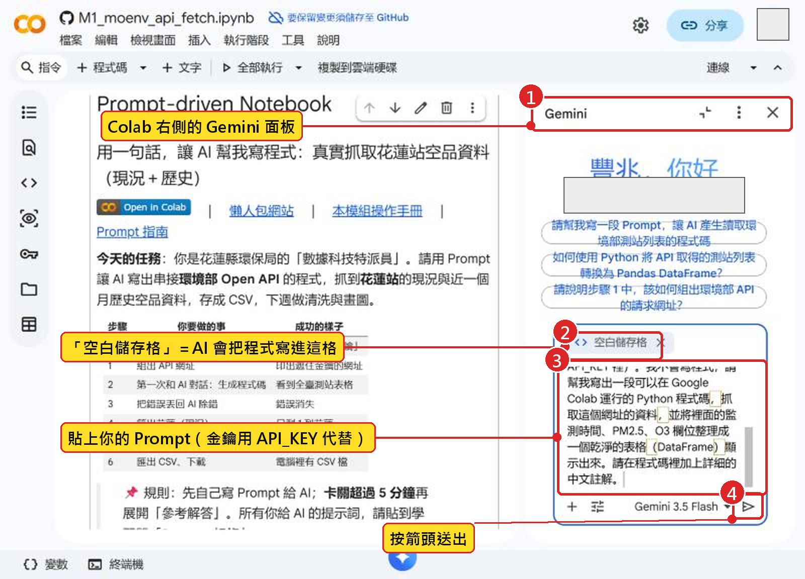
跟著做
- 1右側打開 Gemini 面板
- 2看到「空白儲存格」：程式會寫進這格
- 3貼上你的 Prompt（金鑰用 API_KEY）
- 4按箭頭送出，等 10–20 秒
💡 面板上方的建議問題是 Gemini 讀了這份筆記本自動想的；可以點，但請先用你自己的 Prompt。
步驟 4-7｜Gemini 寫好了：先讀，再按「接受」
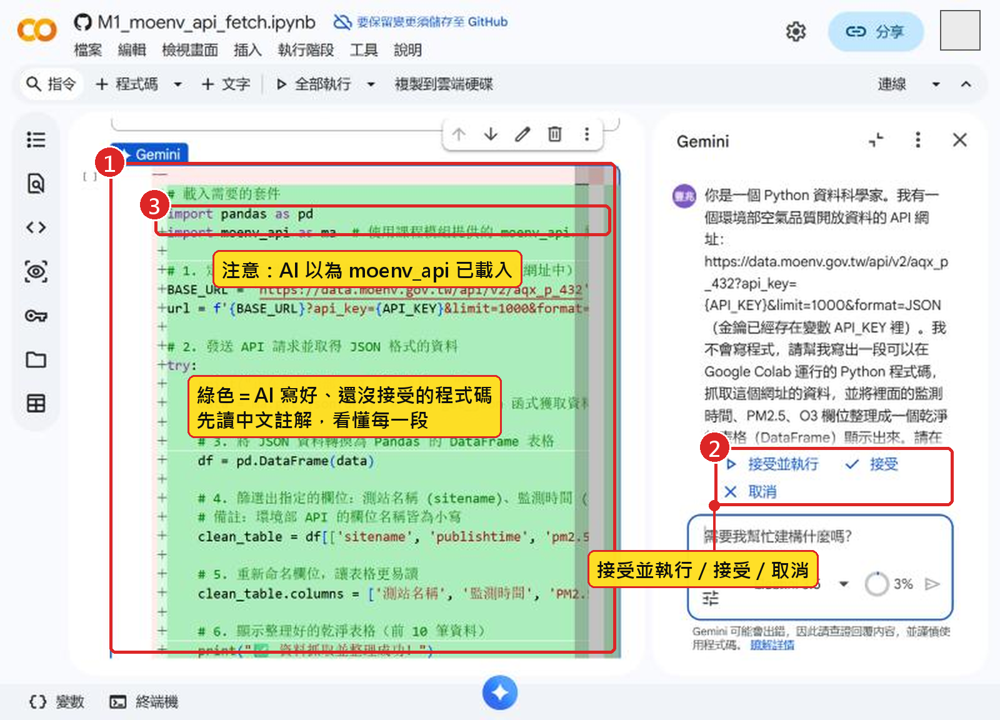
跟著做
- 1綠色＝AI 寫好、還沒接受的程式碼
- →先讀中文註解：每一段在做什麼？
- 3找找看 AI 有沒有亂假設（例如 moenv_api）
- 2看懂了再按「接受並執行」或「接受」
💡 這是 2026/10/18 實際用課程 Prompt 得到的結果：AI 直接 import moenv_api，但我們還沒載入它，等一下就會出錯。
步驟 4-8｜第一次執行：「這個筆記本並非由 Google 編寫」
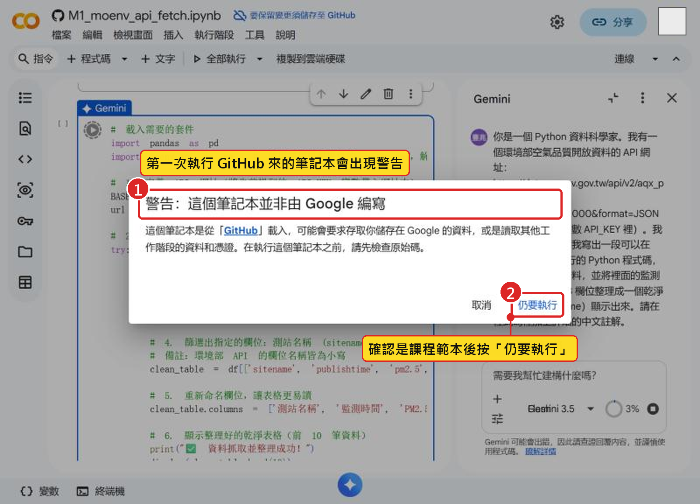
跟著做
- 1從 GitHub 開的筆記本，第一次執行會警告
- →確認來源是懶人包範本
- 2按「仍要執行」，Colab 開始連線
💡 來路不明的筆記本不要隨便按「仍要執行」：它可以讀取你的雲端硬碟資料。
步驟 4-9｜成功的樣子：全臺 80 多個測站的現況表
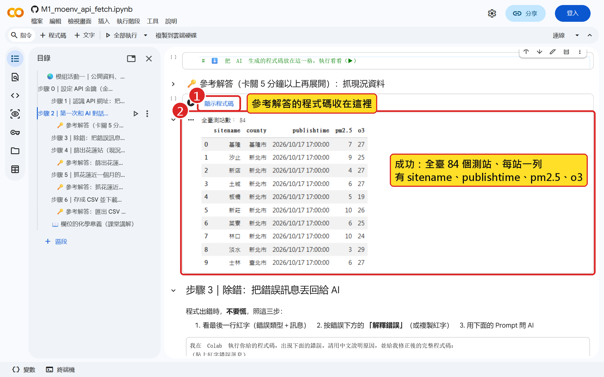
跟著做
- 1表格有 sitename、publishtime、pm2.5、o3 等欄位
- 2全臺約 84 個測站，每站一列
- →對照時間：publishtime 應該是最近一小時
- →跟同學比一比：同一時間的數字應該一樣
💡 判斷結果合不合理是你的工作：O₃ 一般在 10–80 ppb、PM2.5 多在 0–50 μg/m³；出現負數或上萬要懷疑。
5把錯誤丟回 AI
步驟 5-1｜真實案例：AI 寫的程式也會錯
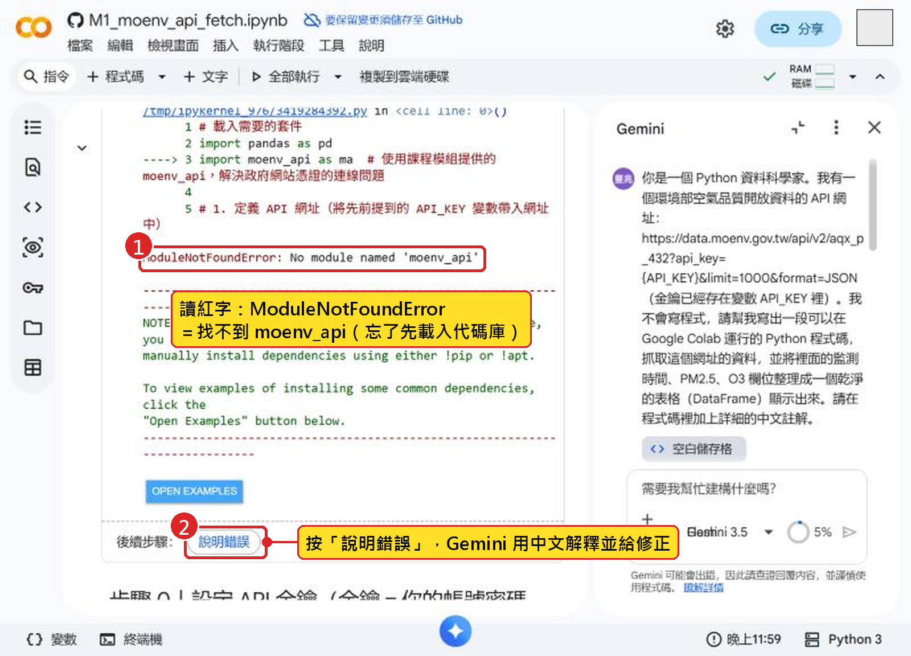
跟著做
- 1讀紅字最後一行：ModuleNotFoundError
- →意思：找不到 moenv_api（還沒載入代碼庫）
- 2按下方「後續步驟：說明錯誤」
- →Gemini 用中文解釋原因並提出修正
💡 正確的修法：先執行範本「步驟 0」的「載入代碼庫」那一格（看到「代碼庫已載入」），再重跑這格。
步驟 5-2｜AI 的修正不一定安全：verify=False
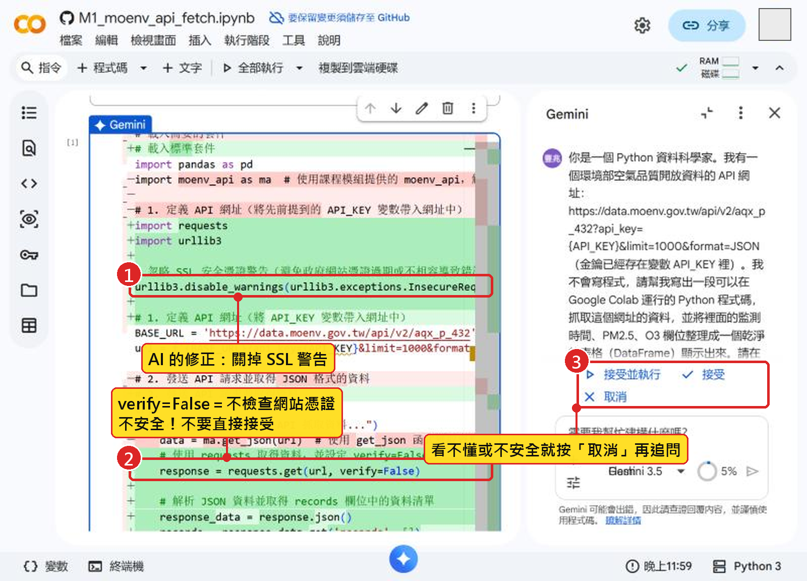
跟著做
- 1Gemini 自動改寫：改用 requests
- 2加上 verify=False＝不檢查網站憑證
- →這會讓假網站也能被當成真的
- 3看不懂或不安全就按「取消」，再追問
💡 追問範例：「為什麼要 verify=False？有沒有不關掉憑證檢查的做法？」懶人包代碼庫的 get_json() 就是更安全的做法。
步驟 5-3｜讀範本的練習格：KeyError 與除錯 Prompt
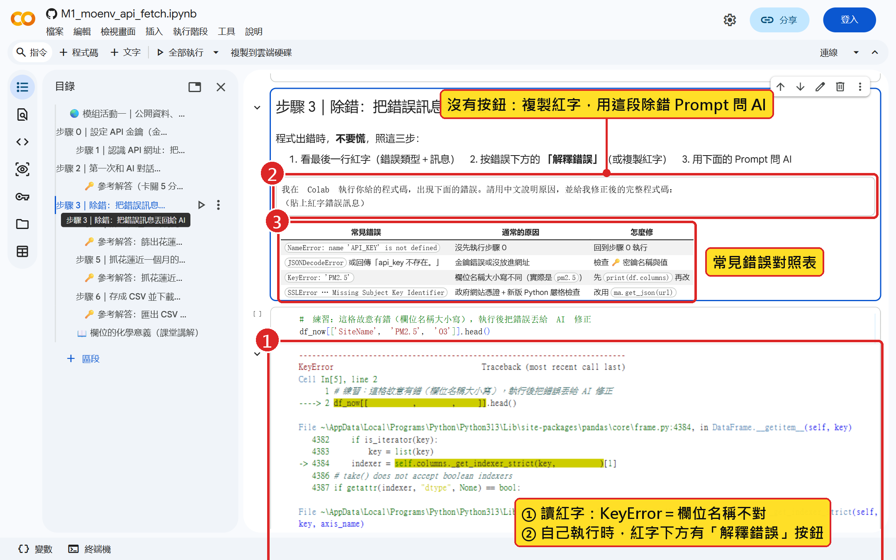
跟著做
- 1練習格故意把欄位寫成大寫，出現 KeyError
- 2沒有按鈕時：複製紅字，用除錯 Prompt 問 AI
- 3對照下一頁的常見錯誤表
💡 除錯 Prompt：「我在 Colab 執行你給的程式碼，出現下面的錯誤。請用中文說明原因，並給我修正後的完整程式碼：（貼上紅字）」
步驟 5-4｜常見錯誤對照表（今天最可能遇到的 6 種）
| 錯誤訊息 | 通常的原因 | 怎麼修 |
|---|---|---|
| ModuleNotFoundError: No module named 'moenv_api' | 還沒載入懶人包代碼庫 | 先執行載入代碼庫的那一格 |
| NameError: name 'API_KEY' is not defined | 沒先執行步驟 0 | 回到步驟 0 執行，再往下 |
| JSONDecodeError／回傳「api_key 不存在。」 | 金鑰錯誤或沒放進網址 | 檢查「密鑰」名稱 MOENV_API_KEY 與值 |
| KeyError: 'PM2.5' | 欄位名稱大小寫不同，實際是 pm2.5 | 先 print(df.columns) 看真正的欄名 |
| SSLError … Missing Subject Key Identifier | 政府網站憑證＋新版 Python 嚴格檢查 | 用 ma.get_json(url)，不要 verify=False |
| 表格是空的（0 列） | filters 打錯字（例如「花連」） | 先不加 filters，看 sitename 怎麼寫 |
動手做｜除錯練習：讓 AI 修好故意寫錯的那一格
任務
- 執行範本「步驟 3」的練習格
- 用「說明錯誤」或除錯 Prompt 修好它
- 修好後印出 df.columns，看真正的欄位名稱
- 把錯誤訊息和 AI 的說明，摘要寫進學習單
完成標準
- ✔ 練習格不再出現紅字
- ✔ 你能用一句話說出錯在哪裡
- ✔ 學習單記錄：錯誤類型、原因、修正方法
- 提早完成：幫旁邊同學，但手不要碰他的鍵盤
⏱ 操作 4 分鐘
6花蓮資料落地存 CSV
步驟 6-1｜兩段 Prompt：篩出花蓮、抓近一個月歷史
【篩花蓮（現況）】
請把上面的 df_now 只留下 sitename 等於「花蓮」的那一列，並顯示 publishtime、aqi、pm2.5、o3、no2、nox、wind_speed 這幾個欄位。
【抓歷史（近一個月）】
請幫我寫 Colab 程式碼，用環境部 API 的 aqx_p_488（空氣品質指標歷史資料），加上參數 filters=sitename,EQ,花蓮 和 sort=datacreationdate desc，limit=1000，把花蓮站的資料抓下來，轉成 DataFrame，並告訴我資料的最早與最晚時間、總共幾筆。
- 先篩現況 應該只剩 1 列花蓮
- 再抓歷史 約 700–1000 列、40 天左右
- 對答案 最早與最晚時間要合理
- 卡關 展開範本的參考解答
步驟 6-2｜花蓮站近 30 天逐時資料（約 700 列）
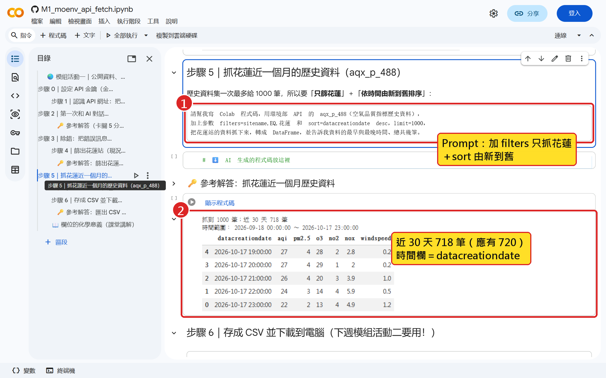
跟著做
- 1確認只有花蓮一個測站
- 2時間範圍約 30–40 天、每小時一筆
- 3數值是「文字」，下週要清洗
- →少幾個小時是正常的：儀器校正或維修
💡 真實資料（2026/9/17–10/17）：30 天應有 720 筆，實際 718 筆；O₃ 有 6 筆空白。下週就從這些「不完美」開始。
步驟 6-3｜存成 CSV 並下載到電腦
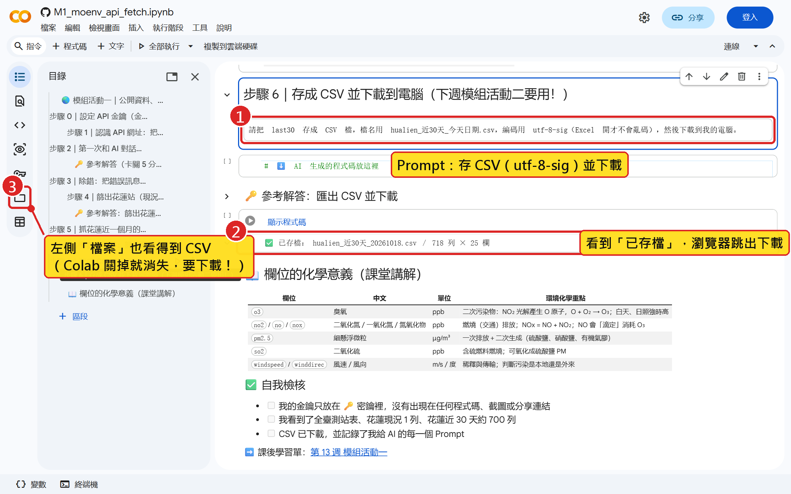
跟著做
- 1Prompt：請把 last30 存成 CSV（utf-8-sig）並下載
- 2執行後瀏覽器跳出下載
- 3左側「檔案」也看得到 CSV
- →檔名建議：hualien_近30天_日期.csv
💡 用 utf-8-sig 編碼，Excel 開啟中文才不會亂碼。Colab 關掉後檔案會消失，一定要下載！
欄位的化學意義：今天抓到的數字在說什麼？
| 欄位 | 中文（單位） | 環境化學重點（課本第 8–11 章） |
|---|---|---|
| o3 | 臭氧（ppb） | 二次污染物：NO₂ + hν → NO + O；O + O₂ → O₃；日照強時高 |
| no2／no／nox | 二氧化氮／一氧化氮／氮氧化物（ppb） | 燃燒、交通排放；NOx＝NO＋NO₂；NO＋O₃ → NO₂＋O₂（滴定） |
| pm2.5 | 細懸浮微粒（μg/m³） | 一次排放＋二次生成（硫酸鹽、硝酸鹽、有機氣膠） |
| so2 | 二氧化硫（ppb） | 含硫燃料燃燒；可氧化成硫酸鹽微粒 |
| windspeed／winddirec | 風速（m/s）／風向（度） | 稀釋與傳輸：判斷污染是本地還是外來 |
收尾與檢核
今日成果檢核＋預期成果對照
對照申請書（六）預期成果：今天達成了哪些？
| 預期成果 | 今天的證據 | 自我檢核 |
|---|---|---|
| 質化①：分辨 AI「工具價值」與「人類主體性」，具 AI 倫理反思 | 倫理兩頁＋金鑰保護＋Prompt 紀錄 | □ 我的金鑰沒有出現在任何地方 |
| 質化②：不再恐懼大數據與程式碼，建立透過 AI 跨領域解題的自信 | 用 Prompt 抓到全臺與花蓮資料，並驗證前 5 筆 | □ 我成功執行、也成功除錯一次 |
| 量化①：每組一件結合花蓮在地 API 的 PBL 數據作品 | 花蓮近 30 天 CSV＝作品第一份原料 | □ CSV 已下載並上傳繳交區 |
| 量化②：建置環化 API 數據協作成果網頁／雲端資料夾 | 懶人包網站「成果展示」頁 | □ 知道期末作品要繳到哪裡 |
| 教學擴散：模組教案開源、可複製可轉移 | 今天用的範本、代碼庫、Prompt 指南全部公開 | □ 我會用懶人包自己再做一次 |
課後學習單（第 13 週）：模組活動一
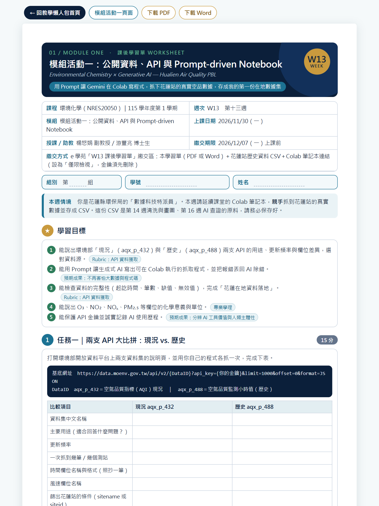
繳交方式與重點
- 任務一 兩支 API 大比拼：現況 vs. 歷史
- 任務二 花蓮「現況快照」：相隔 6 小時抓兩次
- 任務三 Prompt 紀錄＋錯誤除錯紀錄
- 任務四 歷史資料落地：起訖、筆數、無效值
- 任務五 欄位的化學意義
- 最後 AI 使用誠實聲明＆自我檢核
- 繳交 學習單＋CSV，上傳 e 學苑（下週一上課前）
- 下載 懶人包網站「學習單」：HTML／PDF／Word
作業繳交：登入 e 學苑，上傳到「W13 課後學習單」繳交區
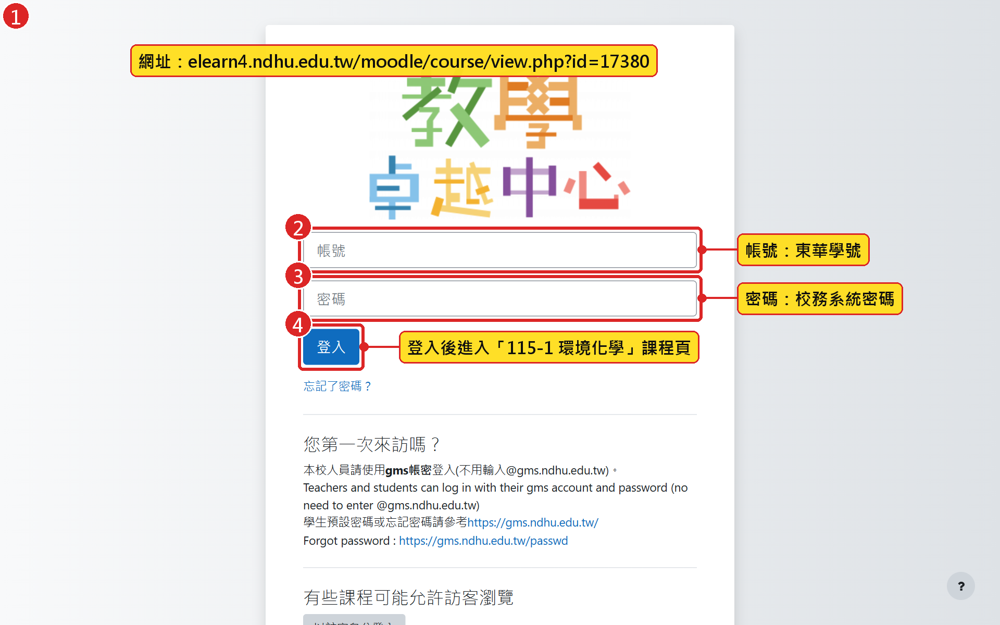
跟著做
- 1網址 elearn4.ndhu.edu.tw/moodle/course/view.php?id=17380
- 2帳號：東華學號；密碼：校務系統密碼
- 3進入「115-1 環境化學」→ 第 13 週「W13 課後學習單」繳交區
- 4上傳：學習單（PDF 或 Word）＋花蓮站近 30 天 CSV
- →下週一上課前；逾期不補交
💡 學生版網站每一頁的「繳交」按鈕都會直接連到 e 學苑課程頁；用手機也可以上傳。檔案請用「學號_W13」開頭命名。